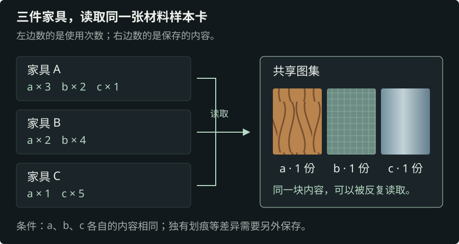
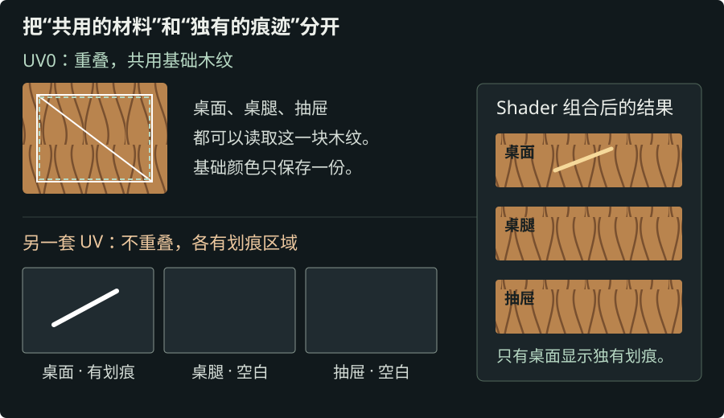

THE LEARNING NOTEBOOK
图集与重叠 UV.
共用一块木纹，怎样只改一个部位？
把许多家具的贴图合成一张图集，能减少资源切换。但当三个部位共用同一块木纹时，一个 UV 到底指向谁？如果只想让其中一块扭曲、变脏或出现划痕，又该怎么办？
由一次家具贴图讨论整理。本文的 a、b、c 表示三种可复用的纹理内容；“使用 3 次”表示有 3 个部位读取它。配图与交互为原创二维教学示意，不是 Unity 实时渲染截图。
图集减少了数量，不一定减少显存
家具改为引用同一张图集后，可以共享这一份纹理资源。法线、金属度等贴图通常还要分别整理，实际共用的可能是一套图集。共用材质还要求 Shader 和渲染状态兼容，透明玻璃与不透明木头通常需要分开处理。
主要收益是减少贴图、材质切换，并为合批创造条件；一个材质不等于一次 Draw Call。普通 GPU Instancing 还要求相同网格等条件，不同家具不能仅凭共用图集就自动实例化到一起。URP / HDRP 的 SRP Batcher 也能优化使用相同 Shader 变体的多个材质，收益应以实际测量为准。[1][2][3]
| 存储方式 | 全部加载 | 只需要其中 1 件家具 |
|---|---|---|
| 16 张 512 × 512 | 16 MiB | 按需只加载 1 张：1 MiB |
| 1 张 2048 × 2048 | 16 MiB | 普通整图加载：16 MiB |
两者的总像素数相同，所以数据量相同。图集的空白、间隔甚至可能增加占用。只有减少总像素、提高有效利用率、改用合适压缩或复用相同内容，才可能进一步省显存。磁盘里的 PNG 大小不等于运行时纹理占用。[4]
上表是理想化比较，独立纹理需要资源系统支持按需加载。常规 Mipmap Streaming 按整张纹理的分辨率层级加载，不能只加载图集里某件家具的矩形区域；虚拟纹理等分块方案另论。[5]
同一块木纹用十次，也可以只存一份
图集可以看成一张“材料样本卡”。桌面、桌腿、抽屉都可以读取卡上的同一块木纹。读取不会占用这块区域，也不会把它消耗掉。


前提是内容确实相同。如果三块木头分别带有不同的划痕、污渍或烘焙细节，它们就不能直接共用同一批像素，同时保留这些差异。单纯把三件家具的整张贴图拼起来，也不会自动消除重复木纹；需要重新安排相应的 UV。
UV 是贴图地址，不是部位身份证
每个部位的顶点仍然有自己的 UV。所谓“重叠”，是这些坐标覆盖了相同的贴图区域。采样时，查的是贴图中的颜色，不是在几个部位中选一个。
- 确定表面正在绘制桌腿的三角形。
- 得到 UV由顶点 UV 插值得到当前坐标。
- 读取纹理去这个地址读取颜色。
- 画到屏幕结合光照等，输出到对应位置。
共享的木纹区域 a
三个部位使用相同坐标时，读取相同的纹理颜色；选中的部位决定把结果用在哪里。
所以，(0.2, 0.4) 可以同时被三个部分使用；在相同采样条件下，读到的是同样的颜色。可如果只拿到这个 UV，反过来问它属于哪一部分，答案就不唯一。模型位置和光照仍可不同，但 UV 本身无法标识部位。
只扰动一个部位：先补上区分它的信息
“我的 UV 对应了三个部分，那不就不能只扰动其中一个了吗？”
如果判断依据只有 UV，你的判断是对的。同一个依赖 UV 的规则，会同样作用于三个完全重叠的区域。要只影响桌面，需要额外提供“这是桌面”的信息，例如顶点颜色中的遮罩，或额外 UV 通道里的部位标记。[6][7]
共享木纹 a这份纹理被改了，三个部分都会读到划痕。
共享贴图被写入划痕后，三个部位都会变化；目标选择本身不能让共享像素分开。
改采样坐标：原图没有被改
给桌面顶点的遮罩值设为 1，另外两个部位设为 0。Shader 就能仅对桌面改变采样位置：
// 概念伪代码：部位遮罩来自额外的顶点数据
采样UV = 原UV + 扰动偏移 × 部位遮罩
颜色 = 读取纹理(共享图集, 采样UV)这里仍然共享图集和材质，只多了选择效果作用范围的数据。如果要用硬边部位标记，相邻部位的边界不能因顶点插值混成中间值，需要正确拆分或编码。图集内的 UV 扰动也要限制在对应区域，避免读到旁边的纹理；普通 Repeat 会重复整张图集，不能自动只重复其中一格。
修改像素：不同划痕，需要不同的存储位置
假如鼠标点中桌面，得到一个 UV，然后直接向共享木纹的这个位置写入划痕，桌腿和抽屉也会读到修改后的像素。知道点中了谁，只解决了“选择目标”，没有解决“差异存在哪里”。


如果不仅要区分同一家具的三个部位，还要让场景中的每一件家具实例有独立损伤，就还需要按实例分配遮罩区域、纹理层或其他独立状态。不能让十把椅子继续引用同一个损伤位置。
“第二套 UV”在 Shader Graph 中通常叫 UV1，Unity 的 Mesh API 对应 uv2。它常用于烘焙光照，已有用途时应选择其他可用通道或重新规划，不能直接覆盖。[7][8]
回到家具项目：按想做的效果选择
| 需求 | 需要准备什么 |
|---|---|
| 多个部位显示同样的木纹 | 共享纹理区域，允许 UV 重叠。 |
| 某个部位的木纹旋转或缩放 | 独立调整该部位的 UV；保持在图集分配范围内。 |
| 只让某个部位扭曲、变色 | 部位遮罩或标记，让 Shader 仅对目标应用效果。 |
| 给某个部位画独有且可保留的污渍 | 独立纹理区域、独立遮罩，或适合的贴花方案。 |
| 每件家具实例都有不同损伤 | 额外的实例标识与独立效果数据；同一部位标记还不够。 |
Unity 中点击模型时，可以结合碰撞对象与命中三角形识别目标，再按规划写入效果数据。RaycastHit.textureCoord 返回的是命中点的纹理坐标，需要 MeshCollider 支持；只保留这个坐标，会丢掉原本用于区分表面的上下文。[9]
这次讨论最值得记住的三句话
同一份纹理可以被反复读取。
重叠 UV 能复用内容，但不能仅凭 UV 认出部位。
独立控制需要额外信息，独立保存差异需要独立空间。
自测：我有部位 ID，直接修改共享木纹就能只改变桌面吗？
不能。ID 能告诉你点中了桌面，但若修改的还是三个部位共用的像素，三个部位都会读到变化。要么用 ID 只改变桌面的采样或着色，要么把划痕写到桌面独有的效果数据中。
自测：把 16 张 512 贴图合成一张 2048 图集，会省 15 倍显存吗？
不会。在相同格式、相同加载层级、忽略间隔和对象开销时，总像素数没变，数据量基本不变。图集主要改善资源切换与合批条件；是否省显存要另算。
对于自由建造场景，可以按经常共同出现的家具、相近的纹理精度与兼容的渲染方式分组制作图集。规划时同时考虑加载范围和后续局部效果，再用 Frame Debugger 与 Profiler 比较渲染开销、Draw Call 和纹理占用。
资料与延伸阅读
依据 Unity 6.0 与 Shader Graph 17 文档核对。家具数量、内存算例、图示与交互均为本文的教学示例。
- Unity · Draw call batching — 合批条件与限制。
- Unity · SRP Batcher — 优化提交开销，不等于合成一次绘制。
- Unity · GPU instancing — 相同网格与材质的实例化。
- Unity · Texture formats in memory — 运行时纹理格式。
- Unity · Mipmap streaming — 按纹理层级加载。
- Shader Graph · Vertex Color Node — 读取额外顶点数据。
- Shader Graph · UV Node — 选择不同 UV 通道。
- Unity · Mesh.uv2 — 第二套 UV 与光照贴图。
- Unity · RaycastHit.textureCoord — 命中位置的纹理坐标。